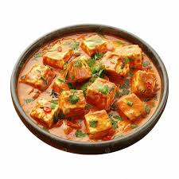

Paneer Tikka Masala
A classic Indian dish of grilled paneer cubes simmered in rich tomato gravy with aromatic spices.
üçΩÔ∏è Serves
4
⏲️ Preparation Time
20 minutes
üî• Cooking Time
25 minutes
ü•£ Ingredients
- 200g paneer cubes
- 1/2 cup yogurt
- 1 tbsp ginger-garlic paste
- 1 tsp red chili powder
- 1/2 tsp turmeric
- 1 onion, chopped
- 2 tomatoes, pureed
- 1 tsp garam masala
- 1/4 cup cream
- Salt to taste
üìù Preparation
- Marinate paneer with yogurt, spices, and set aside.
- Grill or pan-fry paneer until golden.
- Sauté onions, add tomato puree and spices.
- Stir in cream and paneer cubes.
- Simmer and serve with naan or rice.